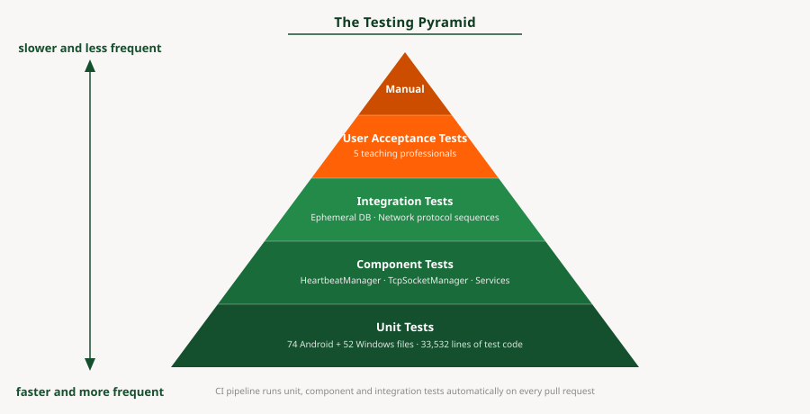
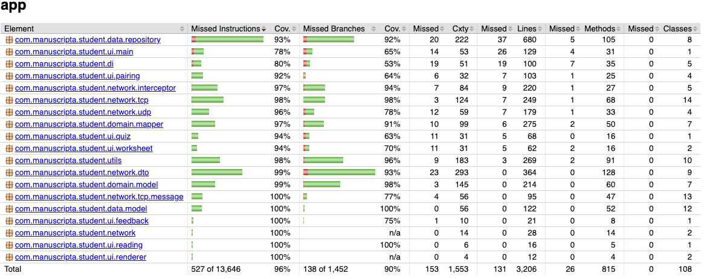

Testing
Testing strategy, coverage metrics, and quality assurance processes for the Manuscripta platform.
Manuscripta's testing strategy covers four areas:
- Unit testing of individual components
- Integration testing of cross-system interactions
- User acceptance testing with teaching professionals
- AI output validation
Both applications have formal test suites enforced through continuous integration.
Testing Strategy Overview
| Type | Scope | Tools |
|---|---|---|
| Unit testing | Individual classes, functions, network protocol handlers | JUnit, Mockito, Robolectric (Android); xUnit, Moq (Windows) |
| Integration testing | Cross-layer data flow, network protocol sequences, database interactions | MockWebServer, ephemeral SQLite, custom integration harness |
| User acceptance testing | Teacher workflows validated against real classroom scenarios | In-person sessions with teaching professionals |
| AI output validation | Material generation consistency and format correctness | Manual prompt testing — automated suite planned as future work |

Manuscripta's testing effort follows the testing pyramid. Unit and component tests form the base — 126 test files running automatically on every pull request, covering individual functions through to full component-level behaviour. Integration tests sit in the middle, verifying cross-system interactions with real network services and ephemeral databases. User acceptance testing forms the top — fewer in number but closest to real classroom conditions. The GitHub Actions CI pipeline runs the full Android test suite on every pull request, serving as automated regression testing and ensuring new changes cannot break existing behaviour without being detected.
Test Execution Instructions
Android
# Unit tests only (integration tests excluded)
./gradlew testDebugUnitTest
# Include integration tests
./gradlew testDebugUnitTest -PintegrationWindows
cd windows/ManuscriptaTeacherApp/MainTests
dotnet testAndroid Unit Testing
Built and maintained by Priya Bargota and Will Stephen
The Android test suite comprises 121 test files covering every layer of the Clean Architecture stack. The testing philosophy prioritises verifying critical behaviours — the features the system depends on — rather than chasing arbitrary line counts.
The Android test suite is organised into four suites corresponding to the Clean Architecture layers: the network suite covering TCP, UDP and HTTP protocol handlers; the data suite covering Room entities, DAOs and repositories; the domain suite covering mappers and business logic models; and the presentation suite covering ViewModels. Each suite contains tests at the same granularity, allowing failures to be isolated to a specific layer without running the full suite.
The Android test suite is organised into four suites corresponding to the Clean Architecture layers: the network suite covering TCP, UDP and HTTP protocol handlers; the data suite covering Room entities, DAOs and repositories; the domain suite covering mappers and business logic models; and the presentation suite covering ViewModels. Each suite contains tests at the same granularity, allowing failures to be isolated to a specific layer without running the full suite.
Coverage Results (JaCoCo)
| Metric | Result |
|---|---|
| Instruction coverage | 96% (527 of 13,646 missed) |
| Branch coverage | 90% (138 of 1,452 missed) |
| Method coverage | 97% (26 of 815 missed) |
| Class coverage | 100% (0 of 108 missed) |
| CI enforcement threshold | 90% line coverage minimum |
The CI pipeline runs ./gradlew jacocoTestReport jacocoTestCoverageVerification on every
pull request. Any PR that drops coverage below the threshold fails automatically and cannot be
merged.

JaCoCo Exclusions
JaCoCo clashed with several dependencies in the Android build, particularly Dagger/Hilt's generated code. The symptoms were twofold: build files generated by Dagger were being incorrectly tracked as test candidates, and classes with comprehensive test suites were reporting 0% coverage due to instrumentation conflicts. To produce accurate metrics, a substantial exclusion list was added to the Gradle configuration covering:
- Generated code: Dagger factories (
*_Factory), Hilt modules (*_HiltModules*,Hilt_*), member injectors, and generated implementations - Android framework classes: Activities, Fragments, and custom Views that depend on the Android lifecycle and cannot be meaningfully unit-tested on the JVM
- Threading-heavy managers:
TcpSocketManager,HeartbeatManager,PairingManager, andConnectionManager— these are excluded from coverage metrics because their real-socket and threading behaviour is better validated through integration tests - Standard exclusions:
R.class,BuildConfig, data binding, and test files themselves
Test Distribution
| Layer | Test Files | Key Areas Covered |
|---|---|---|
| Network | 35 | TCP protocol (15), UDP discovery (4), DTOs (11), HTTP interceptors (5) |
| Data | 22 | Room DAOs (6), data models (9), repositories (7) |
| Domain | 14 | Mappers (7), domain models (7) |
| Presentation | 17 | ViewModels (7), renderers (7), custom views (3) |
| Integration | 18 | HTTP endpoints (10), TCP scenarios (3), E2E flows (3), UDP (1), infra (1) |
| Utils & DI | 11 | Storage, TTS, connection utilities (7), DI module validation (4) |
Testing Approach: HeartbeatManager
The HeartbeatManager illustrates the testing philosophy used across the Android codebase. Rather than describing what was tested, this section explains why each category of test exists.
What it does: The HeartbeatManager sends periodic STATUS_UPDATE messages over TCP to the Windows application, carrying device ID, battery level, current material, and student view state. It also listens for server-initiated commands — material distribution, feedback return, screen lock/unlock, and unpair signals — dispatching each to the appropriate callback.
What must be guaranteed: If heartbeats stop arriving, the Windows application marks
the device as DISCONNECTED after 10 seconds. A missed heartbeat means a teacher loses visibility of
a student's tablet. Conversely, if an incoming DISTRIBUTE_MATERIAL message is dropped, a student
never receives their lesson. The 60 tests in HeartbeatManagerTest are organised around
these failure modes:
Lifecycle correctness: Heartbeats must stop on disconnect and clean up on destroy. Premature heartbeats before pairing would be rejected by the server.
@Test
public void onConnectionStateChanged_stopsOnDisconnected() {
when(mockSocketManager.isConnected()).thenReturn(true);
heartbeatManager.start();
heartbeatManager.onConnectionStateChanged(ConnectionState.DISCONNECTED);
assertFalse(heartbeatManager.isRunning());
}Periodic sending: The configured interval must be respected, and each heartbeat
must carry a fresh device status snapshot. Tests use Mockito's timeout() matcher
rather than Thread.sleep() for deterministic async verification.
@Test
public void heartbeat_sendsPeriodically() throws Exception {
when(mockSocketManager.isConnected()).thenReturn(true);
heartbeatManager.start();
// Mockito timeout() instead of Thread.sleep() for deterministic testing
verify(mockSocketManager, timeout(2000).atLeast(2)).send(any());
assertTrue("Expected at least 2 heartbeats",
heartbeatManager.getHeartbeatCount() >= 2);
}Message routing: Each of the five inbound message types must reach its designated callback and only that callback — a RETURN_FEEDBACK must not trigger the material handler.
@Test
public void onMessageReceived_returnFeedback_doesNotCallMaterialCallback()
throws Exception {
AtomicBoolean materialCalled = new AtomicBoolean(false);
CountDownLatch feedbackLatch = new CountDownLatch(1);
heartbeatManager.setMaterialCallback(() -> materialCalled.set(true));
heartbeatManager.setFeedbackCallback(feedbackLatch::countDown);
heartbeatManager.onMessageReceived(new ReturnFeedbackMessage());
assertTrue(feedbackLatch.await(2, TimeUnit.SECONDS));
assertFalse(materialCalled.get());
}Error resilience: IO exceptions during sending must not crash the heartbeat loop. The manager catches the error, skips the count increment, and continues.
@Test
public void sendHeartbeat_handlesIOException() throws Exception {
when(mockSocketManager.isConnected()).thenReturn(true);
doThrow(new IOException("Test")).when(mockSocketManager).send(any());
// Should not throw
heartbeatManager.sendHeartbeat();
assertEquals(0, heartbeatManager.getHeartbeatCount());
}Configuration updates: Changing the heartbeat interval at runtime must take effect immediately if the manager is running, but must not auto-start a stopped manager.
@Test
public void setConfig_restartsIfRunning() throws Exception {
when(mockSocketManager.isConnected()).thenReturn(true);
heartbeatManager.start();
assertTrue(heartbeatManager.isRunning());
HeartbeatConfig newConfig = new HeartbeatConfig(2000L, true);
heartbeatManager.setConfig(newConfig);
assertTrue(heartbeatManager.isRunning());
assertEquals(2000L, heartbeatManager.getConfig().getIntervalMs());
}Robolectric Compatibility
Several adaptations were required to run tests on the JVM via Robolectric rather than a physical
device. The RetryInterceptor was removed from the test harness because
ConnectivityManager.isConnected() always returns false in Robolectric. A
directHandler was added for immediate Runnable dispatch since Robolectric's paused
looper mode does not execute Handler.post(). A volatile
currentStateSnapshot field was added to PairingManager because
LiveData.getValue() returns stale or null values in Robolectric.
Checkstyle
The Android codebase uses a custom Checkstyle configuration at
android/config/checkstyle/checkstyle.xml. Key rules enforced include a 120-character
line length limit, a 150-line method length limit, a maximum of 7 parameters per method, JavaDoc
required for all public classes and methods, no wildcard imports, spaces only (no tab characters),
and enforcement of equals/hashCode pairs. Checkstyle runs as the first job in the CI pipeline before
tests, meaning code style violations are caught before any test execution begins.
Windows Unit Testing
Built and maintained by Raphael Li and Nemo Shu
The Windows test suite consists of 52 C# test files using xUnit as the test framework and Moq for mocking dependencies.
Layer-by-Layer Coverage Results (XPlat Code Coverage)
Testing the Windows application is substantially more challenging than the Android client due to a heavy reliance on external environments and services (specifically local network UDP/TCP broadcasting, physical filesystem access, SMTP mail delivery, and external AI runtimes such as Ollama and ChromaDB). While the core logic, models, and HTTP controllers maintain strong coverage, the overall average is pulled down by the low-level external and hardware integrations that are notoriously difficult to automate locally without complex mocking.
| Layer | Branch Coverage | Classes |
|---|---|---|
| Controllers (API Layer) | 85.0% | 6 |
| Models & Data Context | 79.6% | 63 |
| Core Business Services | 67.7% | 31 |
| GenAI Services | 66.3% | 15 |
| Network Services | 50.6% | 7 |
| Repositories (Data Access) | 37.7% | 15 |
| Runtime Dependencies | 21.5% | 8 |
Test Distribution
| Category | Test Files | Key Areas Covered |
|---|---|---|
| Controllers | 6 | Attachment, Config, Distribution, Feedback, Pairing, Response endpoints |
| Services | 18 | Session management, Device Registry, TCP/UDP networking, Hub event bridge |
| Entities | 25 | All data models, polymorphic material entities |
| Repositories | 2 | Hierarchy repository, generic repository pattern |
Testing Approach: API Port Configuration
The port configuration tests illustrate the testing philosophy on the Windows side. Manuscripta uses four distinct network ports — each serving a different protocol — and misrouting traffic between them would silently break client-server communication. The tests are organised around verifying the guarantees specified in two project documents.
What it does: The Windows application binds four services to four separate ports:
SignalR on 5910 (frontend communication, per our FrontendWorkflowSpecifications Section 2ZA(8)(b), "The default designated port for SignalR communications shall be 5910."), HTTP REST
on 5911 (material distribution and responses, per API Contract), TCP on 5912 (control
signals), and UDP on 5913 (device discovery). Host-based routing via
RequireHost constrains REST controllers to port 5911 only, while health and SignalR
endpoints remain accessible on any port. These tests verify that the port configuration strictly match to the specification and that the routing rules are correctly enforced, in order to guard against potential misconfigurations that could break client-server communication without obvious errors, which is central to the system's integrity.
What must be guaranteed: If a REST API request arrives on the SignalR port, it must be rejected — otherwise the Android client could silently connect to the wrong service. If the port values drift from the specification, tablets in the field will fail to discover the server. The tests fall into three categories:
Port contract enforcement: Each port value must match the specification exactly. A single-digit drift would break every Android client in the classroom.
/// Verifies NetworkSettings is registered in DI with correct HttpPort.
/// Per API Contract.md §Ports: HTTP Port = 5911.
[Fact]
public void NetworkSettings_HttpPort_Is5911()
{
using var scope = _factory.Services.CreateScope();
var options = scope.ServiceProvider
.GetRequiredService<IOptions<NetworkSettings>>();
Assert.Equal(5911, options.Value.HttpPort);
}
/// Verifies all four ports (SignalR, HTTP, TCP, UDP) are distinct.
[Fact]
public void PortConfiguration_AllPortsAreDistinct()
{
using var scope = _factory.Services.CreateScope();
var settings = scope.ServiceProvider
.GetRequiredService<IOptions<NetworkSettings>>().Value;
var ports = new[] {
settings.SignalRPort, settings.HttpPort,
settings.TcpPort, settings.UdpBroadcastPort
};
Assert.Equal(4, ports.Distinct().Count());
}Host-based routing isolation: REST controllers must only respond on the HTTP port. Accessing them on the SignalR port must return 404 — this prevents the frontend dashboard from accidentally consuming Android-facing endpoints.
/// REST controllers return 404 when accessed on SignalR port (5910).
/// In-memory test server simulates port via Host header.
[Fact]
public async Task Controllers_ReturnNotFound_OnSignalRPort_InNonTesting()
{
using var client = _factory.CreateClient();
var request = new HttpRequestMessage(
HttpMethod.Get, $"/api/v1/config/{Guid.NewGuid()}");
request.Headers.Host = "localhost:5910";
var response = await client.SendAsync(request);
Assert.Equal(HttpStatusCode.NotFound, response.StatusCode);
}Cross-port accessibility: Health and SignalR endpoints must remain accessible on any port. Per FrontendWorkflowSpecifications §2ZA(8)(c), the SignalR port may fall back to 5914–5919 if 5910 is unavailable, so the hub negotiate endpoint cannot be port-restricted.
/// Health endpoint accessible on any port — including fallback ports.
/// Per FrontendWorkflowSpecifications §2ZA(8)(c): SignalR may bind
/// to alternative ports 5914-5919 if 5910 is unavailable.
[Theory]
[InlineData(5910)]
[InlineData(5911)]
[InlineData(5914)]
public async Task HealthEndpoint_Accessible_OnAnyPort(int port)
{
using var client = _factory.CreateClient();
var request = new HttpRequestMessage(HttpMethod.Get, "/");
request.Headers.Host = $"localhost:{port}";
var response = await client.SendAsync(request);
response.EnsureSuccessStatusCode();
}Integration Testing
Integration testing verifies the network-layer interactions between the Android tablet (client) and the Windows teacher application (server). Because the client drives all test scenarios, the Windows backend must be actively running and listening on real network sockets.
Windows Server Preparation
To support live integration testing without altering wire-level protocol behaviours, the Windows
application incorporates a dedicated integration-test startup mode. Running
dotnet run --launch-profile Integration activates the following specific test
behaviours:
- Network Services Auto-Start: The UDP broadcast service, TCP pairing listener, and HTTP REST APIs bind automatically to their default test ports (5913, 5912, and 5911 respectively) on server startup.
-
Database Isolation: The system completely bypasses EF Core migrations and
instead creates a clean, ephemeral in-memory SQLite database (
MainDbContext) on each run to prevent test pollution. -
Test Data Seeding: An
IntegrationSeedServiceinjects perfectly formed dummy data into the database. This includes registering a well-known test device (ID:00000000-0000-0000-0000-000000000001), setting default configurations, and staging dummy AI materials (worksheets, questions, test attachments) for the tablet to request. -
Simulation API: An internal
/api/simulation/endpoint exposes a webhook that directly issues TCP commands to the client (e.g.,LOCK_SCREEN). This deterministic triggering mechanism allows tests to fully automate server-initiated command flows. Crucially, the MSBuild conditions inManuscripta.Main.csprojexplicitly strip theTesting/directory out of the compilation tree during aReleasebuild, ensuring that these simulation backdoors are not accessible in the circulated production binaries.
Android Client Execution
With the Windows server running in integration mode, the Android integration tests execute via
./gradlew testDebugUnitTest -Pintegration. Integration tests are annotated with
@Category(IntegrationTest.class) and excluded from the default test task — the
-Pintegration flag activates them. These tests perform the real assertions, verifying
that the UDP packets are valid, TCP connections complete successfully, and HTTP REST calls return the
exact expected schemas defined in the API Contract.
Manual Integration Testing
In addition to automated tests, comprehensive manual testing has been conducted between the Windows application running in deployment mode and a physical Android tablet. This ensures that when the frontend is fully involved, all systems communicate correctly, maintaining stability and confirming the correct working order of the two applications in real-world scenarios.
User Acceptance Testing
Teaching professionals from the National Autistic Society tested the Windows application in person. Testers navigated the full teacher workflow: opening the application, generating AI-powered materials using the content generator, deploying materials to connected E-ink devices, and monitoring student progress from the dashboard.
| Field | Detail |
|---|---|
| Test Case ID | UAT-01 |
| Title | Teacher generates a worksheet from a source document |
| Description | Verifies that a teacher can generate a correctly formatted, age-appropriate worksheet using the AI content pipeline with a source document uploaded |
| Preconditions | Windows application running, Ollama loaded with Qwen3:8b, PDF source document available for upload |
| Test Data | Subject: History, Age group: 14, Material type: Worksheet, Source document: one page PDF |
| Steps |
|
| Expected Result | Worksheet appears within 60 seconds containing age-appropriate content derived from the source document, with correctly formatted questions and no structural errors |
| Actual Result | Pass |
| Pass/Fail | Pass |
| Tested By | At least 5 school teachers and educators |
| Date | March 2026 |
Key findings:
| Feedback | Change Made |
|---|---|
| "Ability to lock tablets to get students' attention when needed" | Lock All Screens button added (C6) |
| "Can we structure content as Units containing Lessons?" | Hierarchical content organisation added (C7) |
| "It would be nice if students could easily switch between lesson and quiz" | Seamless lesson-quiz navigation toggle added (C8) |
| Student statuses shown with small coloured labels were hard to read | Entire device block now colour-coded by status |
| Terms such as lesson, quiz and worksheet were ambiguous | Labels and terminology clarified throughout |
Educator Feedback
"The screen locking feature is really helpful for classroom management. It takes away the extra workload of having to constantly manage what students are doing on their devices. While the live digital feedback might not be as applicable for highly visual subjects like Art, it's clear how much maths and science teachers will benefit from it. 100% would use the screen locking!"

"Looks amazing! I like that you can choose the reading age and the actual age separately, so students don't get content pitched too young, which can be a massive barrier to learning. I love that it goes straight into the editor with no copy and pasting or time wasting. I also like that teachers can do their own marking, as sometimes students can gain a few points for showing understanding even if they made a mistake with the adding up. It would definitely be useful in the classroom as teachers struggle to produce differentiated classwork and have limited time to prepare lessons."

"I like the look of Manuscripta and think it could be really useful. I liked the distraction-free tablet, that teachers can modify AI generated materials, that you can upload your own materials and the AI creates from them, and the ability to distribute, lock and monitor student tablets. AI marking is great too and you've still got control over it. A useful addition would be having exam board mark schemes built in, so tasks and feedback could target these specifically. But overall it looks very promising!"

"This is really going to benefit students who need distraction-free learning. The text and screen colours work well together too - they gave me a sense of calm and I felt less eye strain while reading. The ability to change the vocabulary depending on actual age and reading age is brilliant, particularly if it lets teachers produce differentiated work for individual students without it looking too obvious. The one thing students hate is standing out by having something different from their peers, and I think it would also encourage staff to differentiate more as it's easy for them to do. Being able to give immediate feedback as students finish a task makes it more relevant to them while it's still in their minds. My only question would be whether the generated feedback also takes into consideration the student's reading age - the more independent the learner is, the better!"
Device and Platform Compatibility
Manuscripta was tested across a range of devices and operating system configurations to validate compatibility with the target hardware.
E-ink Device Compatibility
| Device | Category | Delivery Method | Status |
|---|---|---|---|
| Boox / AiPaper | Android E-ink | Direct Wi-Fi via Android app | ✓ Supported |
| Kindle Scribe | Non-Android E-ink | Email PDF workflow via SMTP | ✓ Validated in user testing |
| reMarkable | Non-Android E-ink | Email PDF workflow via rmapi | ✓ Validated by domain expert Atia Rafiq |
schoolteachers and independently confirmed by Atia Rafiq, whose professional healthcare workflow uses the identical mechanism.
Android Version Compatibility
The Android application targets API level 36 and supports a minimum of API level 27 (Android 8.0). This range covers all commercially available Android E-ink tablets from manufacturers including Boox and AiPaper.
Windows Compatibility
The Windows teacher application was tested on Windows 11 with RTX4050 GPU. On machines without a dedicated AI chipset, AI generation falls back to CPU inference, which remains functional but significantly slower. A minimum of 8 GB RAM is required, with 16 GB recommended when running AI models locally.
AI Output Post-Processing Validation
The AI content generation pipeline introduces non-determinism — the same prompt does not always produce identical output. Manuscripta addresses this through a deterministic post-processing pipeline that runs regardless of model output: unclosed code blocks are closed, headers above H3 are normalised to H3, malformed question markers are fixed, and invalid references are removed. The validation function was unit tested to verify it correctly identifies and flags each error type.
Refer to the evaluation section for a detailed analysis of AI output latency, quality and consistency.
Bugs Discovered Through Testing
The following bugs were discovered and fixed as a direct result of testing:
| PR | Bug | How Testing Found It |
|---|---|---|
| #286 | All 7 Retrofit endpoints missing /api/v1/ prefix, causing 404 on every request | Integration tests returned unexpected 404 responses |
| #286 | MaterialDto deserialised as null due to incorrect @SerializedName("Type") annotation | DTO unit tests failed on null field assertions |
| #286 | Server retained TCP state between test runs, causing 25% flaky failure rate on handRaised test | Intermittent CI failures identified the stateful server issue |
| #286 | Controllers returning 400 Bad Request for invalid GUID format, which could leak information about ID validity to unauthenticated callers | Security-focused test assertions identified the response code mismatch — changed to 404 Not Found with generic messages to align with RESTful best practice |
| #255 | Windows CI running in wrong directory, silently failing to catch test failures | Manual inspection of CI output revealed no tests were executing |
| #266 | External communication using port 5910 instead of 5911, violating the API contract | Enforcement tests added specifically to prevent regression |
| #295 | Refactoring GenerateResponsePdfAsync to call GetAllAsync() caused four tests to fail | Existing mocks expected old per-entity methods, caught the breaking change immediately |
The flaky test in PR #286 is particularly notable — a 25% failure rate on the handRaised acknowledgement test revealed that the Windows integration server was retaining TCP connection state between test runs. The fix required adding a proper state reset between tests, which is now handled by the POST /api/v1/integration/reset endpoint described in the integration testing section.